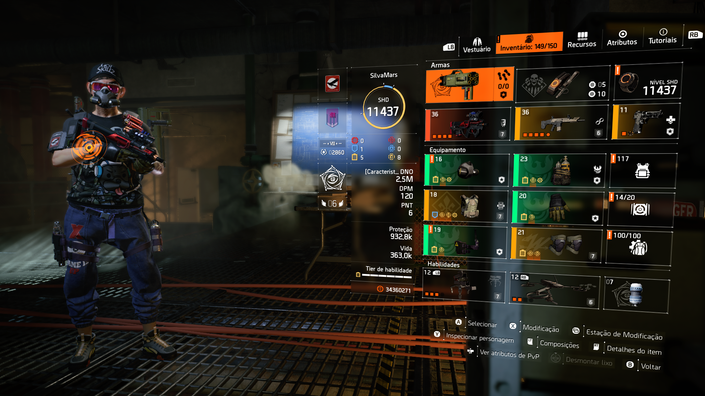
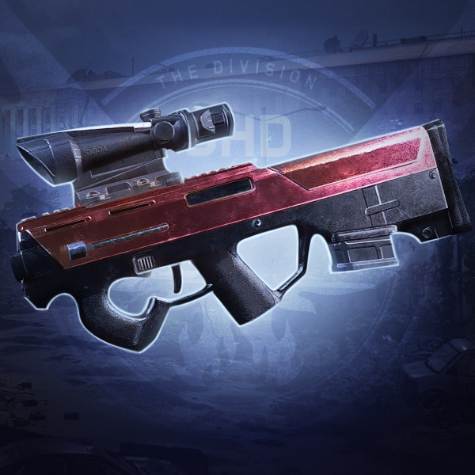
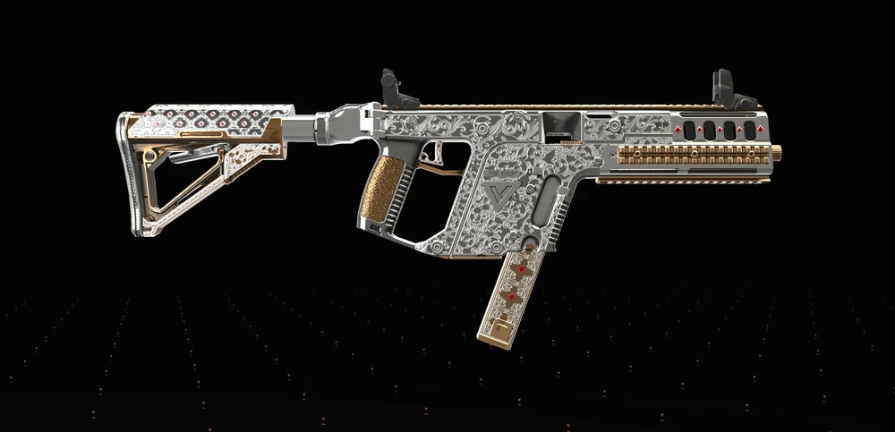

Dano automatizado
Ideal para quem quer causar dano sem se expor o tempo todo ao fogo inimigo.
Esta é a versão mais segura e consistente da build de skill para PvE geral. O foco é manter dano constante com skills automáticas, boa distância de combate e excelente conforto para farm, progressão e atividades difíceis.
Ideal para quem quer causar dano sem se expor o tempo todo ao fogo inimigo.
Turret e drone mantêm pressão constante, puxam aggro e ajudam muito em missões longas.
Black Tusk, jammer e áreas com muita interferência reduzem bastante o ritmo da build.
Brilha em mundo aberto, Summit, Countdown e também funciona muito bem em Lendárias.
A versão mais forte e consistente para turret + drone gira em torno de peças high-end com foco total em dano de skill.
Visual real da build dentro do jogo, incluindo equipamentos e gameplay.

Visão geral da build equipada com todas as peças e atributos.

Configuração de dano crítico, chance crítica e DPS geral.
Veja como a build se comporta em combate real.
Aqui a arma não é a estrela principal. Ela serve para ativar talento, manter pressão e complementar o dano das skills.

EXO
SMGÉ a base do setup. Segura corredor, pune rushers, ajuda a travar avanço inimigo e mantém dano estável o tempo inteiro.
Excelente para perseguir inimigos escondidos, forçar NPC a sair da cobertura e manter pressão mesmo quando você precisa reposicionar.
A ideia é jogar de forma controlada: posicionar bem as skills, manter cobertura e usar a arma apenas para complementar o ciclo de dano.
Mantenha sempre cobertura e evite exposição direta. Posicione a torre em locais elevados ou com boa visão do campo para maximizar o dano contínuo. O drone deve ser usado para pressionar inimigos fora de alcance ou forçar movimentação.
Use suas habilidades para controlar o ritmo da luta. A torre mantém pressão constante enquanto o drone elimina alvos prioritários. Foque em inimigos mais perigosos primeiro, como snipers, rushers ou elites com habilidades.
Gerencie bem o tempo de recarga das habilidades. Reposicione a torre sempre que necessário e evite deixá-la destruída em campo aberto. Em situações críticas, recue, espere o cooldown e retome o controle da área com segurança.
A próxima evolução natural é testar outras builds de acordo com as peças que você for conseguindo, vale a pena experimentar e adaptar o estilo de jogo. O importante é se divertir e aproveitar o conteúdo endgame do jogo.